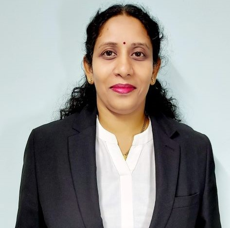

Dr. Alka Surendra Barhatte
Assistant Professor

Assistant Professor
Dr. Alka Surendra Barhatte is an Assistant Professor in the Department of Electrical and Electronics Engineering at MIT World Peace University, Pune. She graduated in Electronics Engineering from Dr. Babasaheb Ambedkar Marathwada University, Aurangabad in 1978, and completed her post-graduation in Electronics-VLSI Design from Bharati Vidyapeeth Deemed University, Pune, India in 2006. In January 2020, she received her Doctorate in Electronics and Telecommunication from Savitribai Phule Pune University. With over 22 years of experience, including 1 year of industry experience, her areas of interest include Artificial Intelligence-Machine Learning, Automotive Electronics, Internet of Things, and technical skills include Data Structures, C, C++, Java, Python, MATLAB, Simulink, Multisim, and Embedded C.
Profiles